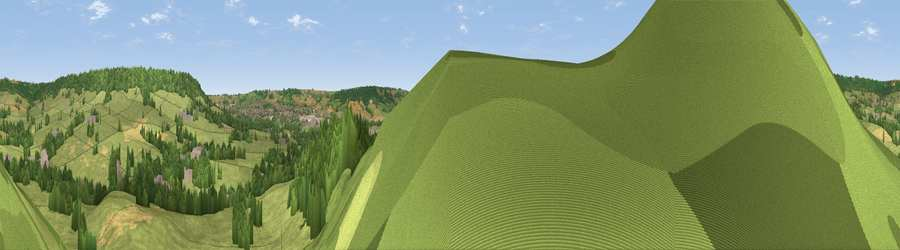

Buckerell Knap
#13212 in England · top 22% of its area beats it · near AwliscombeThe view, rendered

A 360° render of this exact spot computed from the terrain model, tree cover and land cover — summer colours, afternoon light, calibrated against photographs of famous viewpoints. Real trees, hedges and buildings will differ in detail.
The panorama
Grey silhouette: terrain skyline in each direction (720 bearings, Earth curvature and refraction included). Dashed green: skyline with trees (+15 m) and buildings (+8 m) as obstacles. Blue strip: how far the ground is visible on each bearing.
Where the view opens
Wedge length = distance to the farthest visible ground on that bearing (vegetation-aware). Rings at 10, 25 and 50 km.
What fills the view
75% grassland · 15% woodland · 8% cropland · 2% built-up
Angular shares of the visible panorama (visual magnitude), not map area. Landscape diversity 0.34 (0–1 Shannon).
Key numbers
More beautiful places nearby
The staircase of upgrades: each row has a higher view potential than everything closer. Driving times are estimates from straight-line distance, calibrated against real road routing — check an actual route before setting out.
| Place | Direction | Drive | Score |
|---|---|---|---|
| Hembury | NW · 2 km | ~6 min | 75.9 |
| Viewpoint near Tipton St John | S · 11 km | ~20 min | 81.5 |
| Viewpoint near Colaton Raleigh | S · 14 km | ~26 min | 82.1 |
| Viewpoint near Sidmouth | S · 15 km | ~27 min | 83.0 |
| High Peak | S · 16 km | ~28 min | 85.3 |
| Golden Cap | ESE · 29 km | ~46 min | 88.7 |
| The Knoll | ESE · 43 km | ~63 min | 91.0 |
50.80624, -3.23926 · source: dobih hill · position refined by local search. Computed location — check access rights before visiting.